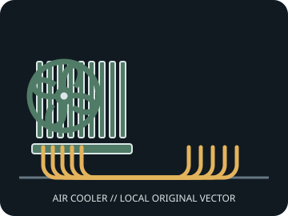

[ INDIVIDUAL COMPONENT // AIR CPU COOLING ]
ID-COOLING SE-207-XT BLACK
Seven-heatpipe dual-tower cooler with two 120 mm PWM fans; check the upgrade-kit requirement for newer socket revisions.

IDENTIFICATION: Match the model/SKU, revision, and supplied bracket. Dimensions and socket coverage can vary by package or region; verify the included hardware and current manufacturer documentation before installation.
Dimensions, fit, and manufacturer specifications
| Exact model / SKU | SE-207-XT BLACK |
|---|---|
| Overall dimensions | 144 × 122 × 157 mm (L × W × H), with fans. |
| Installed height / case clearance | 157 mm. |
| Supplied fan(s) | 2 × 120 × 120 × 25 mm PWM fans, 700–1,800 rpm. |
| Noise / airflow (manufacturer figures) | Manufacturer fan range: 15.2–35.2 dB(A); maximum airflow 76.16 CFM per fan. |
| Heat pipes | Seven 6 mm copper heat pipes. |
| Socket bracket compatibility | Intel LGA 2066 / 2011 / 1200 / 1150 / 1151 / 1155 / 1156; AMD AM5 / AM4. ID-COOLING notes that LGA1700/1851 support may require its upgrade kit; verify availability before purchase. |
| RAM / motherboard clearance | Front-fan height can be adjusted to clear memory, increasing installed height. Manufacturer does not state a universal DIMM-height number; verify the board, fan position, and case limit. |
Cooler height is not a complete fit check: account for fan lift, side-panel clearance, motherboard heatsinks, DIMM position, and any case tolerance.
Installation and service notes
- Install only with the model-specific manual and retention hardware for the selected CPU socket. Confirm orientation and bracket standoff before tightening.
- Apply thermal interface material as directed by the cooler maker. Tighten evenly, connect PWM leads to suitable headers, and verify fan tachometer operation.
- Disconnect power and restrain fan blades during cleaning. Check for fin damage, cable contact, or loosened fasteners during service.
Manufacturer sources
- ID-COOLING — SE-207-XT BLACK product specificationsManufacturer dimensions, fan data, heat pipes, and socket/upgrade-kit notes.
- ID-COOLING — SE-207-XT BLACK Intel installation videoModel-specific installation guide published by ID-COOLING's official channel.
Static reference only. Manufacturers can change regional SKUs, bracket bundles, product specifications, and support documents; check the documentation for the exact unit.